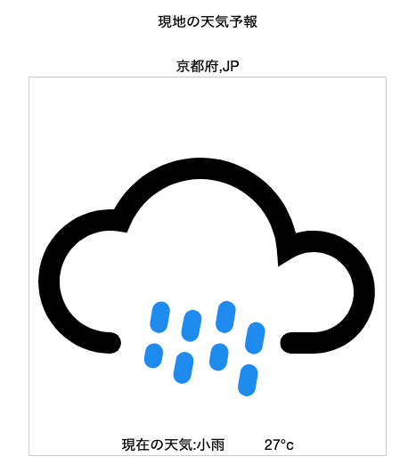
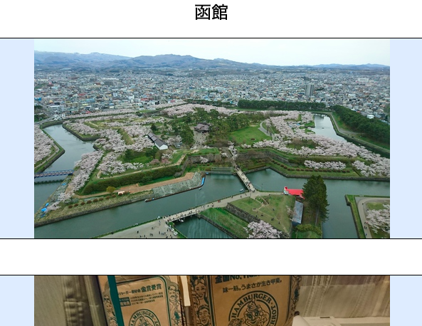

Road to Rainbow（画像保存アプリ）
開発環境
Ruby / Ruby on Rails / Java Script / MySQL / GitHub / Heroku / Visual Studio Code
-
概要
制作時間 100時間 URL https://original-37977.herokuapp.com/ ID admin PASS 2828 -
動作テスト
テスト用アカウント
mail 123456@rb PASS 123abc
OUTLINEアプリケーションの概要
オリジナルアプリケーションとして、個人使用を目的とした画像保存用のアプリケーションを開発いたしました。
主な機能は、ユーザー登録機能と画像保存機能、検索機能と天気予報の確認ができる機能です。
ユーザー登録を完了すると、画像を保存することが可能になります。
画像は都道府県ごとに管理され、トップページの各都道府県をクリックすることで保存した画像を確認することができます。
検索機能では年月を入力することで、例えば2022年5月で登録した画像の一覧を確認することができます。
また、各都道府県のページにて各地の天気予報を確認でき、旅の予定を立てるためにも役立てることができます。
-
開発に至った経緯
私自身の趣味は旅行です。
写真や訪れた日を都道府県ごとに保存したいと思い、今回のオリジナルアプリケーションを作成いたしました。
Google Driveなどで写真の保存は可能ですが、都道府県ごとに管理するためにはフォルダを分けたりなどの工夫が必要です。
その手間を省くため、そして個人の思い出として残すために作成を行いました。 -
開発で工夫したこと
画像を保存すると、トップページの各都道府県に色がつく仕様にいたしました。
どこどこに行ったことがあるという記録とともに、日本全国を旅するという目的にもなり得ると考えます。
また、WebAPIを用いて各都道府県ごとに天気予報を表示させました。
思い立ったが吉日、天気予報を確認して旅に出る後押しをしてくれることを期待しています。
-
今後実装したいと思っていること
メディアクエリの実装です。
現状ではPCでの操作のみに限定しているため、スマートフォンなどでの使用を想定したCSSの編集などをおこなっていきたいと思います。
また、Java Scriptの記述が冗長になってしまっています。
Railsからの引数の渡す順番や、ファイルを読み込む順番などを工夫することで改善は可能かと考えますので、試行錯誤しながら改善を図っていきたいと思います。